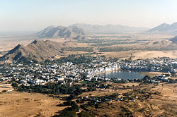

Pushkar
Pushkar | |
|---|---|
Town | |
|  Pushkar, Rajasthan aerial view | |
| Nickname(s): Tirthraj Pushkar तीर्थराज पुष्कर | |
| Coordinates: 26°29′16″N 74°33′21″E / 26.487652°N 74.555922°ECoordinates: 26°29′16″N 74°33′21″E / 26.487652°N 74.555922°E | |
| Country | |
| State | Rajasthan |
| District | Ajmer |
| Elevation | 510 m (1,670 ft) |
| Population (2011) | |
| • Total | 21,626[1] |
| Languages | |
| • Official | Hindi |
| Time zone | UTC+5:30 (IST) |
{kind=link}
{kind=link}
{kind=link}
Pushkar is a town in the Ajmer district in the Indian state of Rajasthan. It is situated about 10 km (6.2 mi) northwest of Ajmer and about 150 kilometres (93 mi) southwest of Jaipur.[1] It is a pilgrimage site for Hindus and Sikhs. Pushkar has many temples. Most of the temples and ghats in Pushkar are from the 18th century and later, because many temples were destroyed during Muslim conquests in the area.[1][2] Subsequently, the destroyed temples were rebuilt. The most famous among Pushkar temples is the red spired Brahma Temple built by Gurjar samrat Pushkar, who is father of Vedmata Gayatri, who was a chechi kanya married to lord brahma. It is considered a sacred city by the Hindus particularly in Shaktism,[1][3] and meat and eggs consumption are forbidden in the city.[4] Pushkar is located on the shore of Pushkar Lake, which has many ghats where pilgrims bathe.[3] Pushkar is also significant for its Gurdwaras for Guru Nanak and Guru Gobind Singh. One of the bathing ghats is called Gobind ghat built by the Sikhs in the memory of Guru Gobind Singh.[5]
Pushkar is famous for its annual fair (Pushkar Camel Fair) featuring a trading fete of cattle, horses and camels.[1] It is held over seven days in autumn marking Kartika Purnima according to the Hindu calendar (Kartik (month), October or November). It attracts nearly 200,000 people.[3] In 1998, Pushkar hosted about 1 million domestic (95%) and international tourists over the year.[6]
Contents
Etymology[edit]
{kind=link}
Pushkar in Sanskrit means "blue lotus" flower.[3][7]
Location[edit]
Pushkar is in centre-east part of Rajasthan, on the western side of Aravalli mountains. The nearest airport from Pushkar is Kishangarh Airport in Kishangarh, about 45 km (28 mi) northeast. Pushkar is about 10 km (6.2 mi) from Ajmer, connected via Pushkar road (Highway 58) which goes over the Aravalli Range mountains. Ajmer is also the nearest major railway station.[8]
History[edit]
Pushkar is near some of the oldest geological structures in India. Microliths near Khera and Kaderi suggest the region was settled in ancient times. The Aravalli hills near it have yielded Mohanjodaro-style artifacts, but the connection is unclear as these items may have been transported later.[9] Sites near it have been sources of ancient Brahmi script inscriptions, considered pre-Ashokan near village Badli.[10] Local excavations have been a source of red ware and painted gray ware confirming ancient settlement.[9]
Pushkar is mentioned in the Ramayana, the Mahabharata and the Puranas suggesting its significance in historical and religious tradition of Hinduism.[9][11] The town is mentioned in many texts dated to the 1st millennium.[8] These texts are not, however, historical. The earliest historical records relating to Pushkar and Ajmer are found in Islamic texts describing the raids and conquest of northwestern regions of the Indian subcontinent.[9]
The region finds mention in Mohammad Ghori 1192 CE conquest related records, in the defeat of Prithviraj Chauhan. Thereafter, Pushkar and nearby Ajmer find mention in historical records related to Qutub-ud-din Aibak. It was regained by Rajput Hindus under the Chauhan of Ranthambhor in 1287, but regained by Delhi Sultanate in 1301 and remained in Muslim control for many centuries.[9] Akbar made the nearby Ajmer one of the provincial capitals, and it remained a part of Mughal Empire till 1712 CE.[9] The Muslim rule brought destruction as well as cultural influences. Aurangzeb's army destroyed the Hindu temples along the lake.[1] The cattle and camel trading tradition brought merchants from Afghanistan.[12] With the collapse of Mughal Empire after Aurangzeb, Pushkar was regained by Hindus and became a part of Rathors of Marwar who rebuilt the temples and ghats.[5] Several important temples were rebuilt by the Rajputs, Marathas, Brahmans and wealthy Hindu merchants. The Brahma temple was rebuilt by Gokul Parak Oswal, the temple of Saraswati was rebuilt by the Purohit of Jodhpur, the temple of Badri Narayana was rebuilt by the Thakur of Kherwa, the temple of Varaha which had been destroyed by Jehangir was rebuilt by Maharaja Bakht Singh of Marwar, the Maratha Noble Goma Rao rebuilt the Shiva Atmateshwara Temple.[13][1] In 1801, Pushkar came under the British rule and remained a part of the British Empire till 1947.[9]
In contemporary times, it has been the venue of the famed annual Pushkar Camel Fair.[3]
Demographics[edit]
In 1901, the town was part of the Rajputana Agency had a population of 3,831.[15]
According to 2011 India census,[14] Pushkar had a population of 21,626. The town had 11,335 resident males and 10,291 females. Children in the 0-6 age group constituted 13.95 % of the population. About 80% of the population including all age groups was literate (90% male literacy rate, 70% female). The town had over 4,250 houses, or about 5 residents on average per house.[14]
Festivals and landmarks[edit]
{kind=link}
{kind=link}
{kind=link}
_Faces_and_colours_at_Pushkar_Fair.jpg){kind=link}
Pushkar Fair[edit]
Pushkar fair continues for five days and these five days are a period of relaxation and merry-making for the villagers. This fair time is the busiest time for them, as this is one of the largest cattle fairs in the country. Animals, including over 50,000 camels,[citation needed] are brought from distant places around to be traded and sold. All the camels are washed and adorned, some are shorn to form artistic patterns. Some camels, horses, and cows are colorfully decorated.[17]
In addition to the animal trading market, Pushkar in parallel holds a festival of folk music and dances, ferris wheels, magic shows, horse and camel races and various other traditional sports and team entertainment competitions. While the Pushkar fair is held around the Kartik Purnima that typically overlaps between late October and early November, other seasons feature other sports and festivals for pilgrims who visit the sacred lake.[18][19]
Sikh Gurdwaras[edit]
{kind=link}
Pushkar is a sacred pilgrimage site for the Sikhs as well, according to Gurmukh Singh, with Gurdwaras dedicated to Guru Nanak and Guru Gobind Singh. These have historic roots, with the Guru Nanak Gurdwara in the eastern part of the town called Guru Nanak Dharamsala, a name common for Sikh shrines before the 20th-century. The Sikh Dharamshala is a two-storeyed building consisting of a central room, surrounded by a verandah.[5]
The second Sikh temple is dedicated to Guru Gobind Singh marking his visit after he had been forced out of Anandpur by Aurangzeb.[5] The place he stayed in and the lakefront next to it is now called the Gobind Ghat. It has a memorial inscription and this shrine was built with the sponsorship of the Maratha Empire, after the widespread Hindu-Muslim wars in the final decades of Aurangzeb rule and the collapse of the Mughal Empire.[5] The shrine has an old hand written copy of the Sikh scripture, the Guru Granth Sahib and a hukumnama believed by Sikhs to have been written by Guru Gobind Singh. Both these have been preserved by a Pushkar Brahmin priest, a descendant of the priest whom the Guru met. The hukumnama is on a bhoj patra, a method of recording letters in the 18th century.[5]
Pushkar Holi[edit]
Holi takes place in March and it is one of the most important festivals in the Hindu calendar. It represents the triumph of good over evil and the coming of springtime. Holi celebrations happen all over India and involve huge jubilant street parties. During Holi, Bhang (ancient Indian cannabis edible) is served in Pushkar, which is known to have some of the best Bhang in India.[20]
Other landmarks[edit]
{kind=link}
{kind=link}
Temples along the lake include:
- Brahma Temple (Jagatpita Brahma Mandir) – The most important temple in Pushkar is the temple of Lord Brahma, one of the holy trinity of Hinduism. The temple enshrines a life-size idol of Lord Brahma.
Fairs
Ajmer is the nearest tourist attraction that lies outside the city boundaries of Pushkar. Located 27 kilometres away from Ajmer, there is Kishangarh, famous for its miniature paintings, more popularly known as Bani Thani.[citation needed]
Pushkar Lake – The prime attraction of Pushkar is the Pushkar Lake which is considered sacred like the Mansarovar Lake in Tibet. Pushkar has become a place of Hindu pilgrimage because of this holy lake. Legend has it that this lake was consecrated to Lord Brahma, the creator of the universe when a lotus dropped from his hand into the vale and a lake emerged in that place.
Old Pushkar – Old Pushkar lake is rebuilt and is located around 5 km from Pushkar Lake. According to the ancient texts, Old Pushkar has equal cultural and religious significance for the pilgrims.
{kind=link}
See also[edit]
- List of lakes in India
- Suresh Singh Rawat member of the 14th House Representing Pushkar Constituency.
References[edit]
- ^ a b c d e f g Pushkar, Encyclopaedia Britannica
- ^ "Al-Hind: The Slavic Kings and the Islamic conquest, 11th-13th centuries", Page. 326
- ^ a b c d e f James G. Lochtefeld (2002). The Illustrated Encyclopedia of Hinduism: N-Z. The Rosen Publishing Group. p. 539. ISBN 978-0-8239-3180-4.
- ^ David Abram. The Rough Guide to India. Rough Guides. p. 192.
- ^ a b c d e f Gurmukh Singh (2009), Pushkar, Encyclopedia of Sikhism, Editor in Chief: Harbans Singh, Punjab University
- ^ David L. Gladstone (2013). From Pilgrimage to Package Tour: Travel and Tourism in the Third World. Routledge. p. 183–184. ISBN 978-1-136-07874-3.
- ^ A. Kalyanaraman. Aryatarangini, the saga of the Indo-Aryans, Volume 2. Asia Pub. House, 1970. p. 551.
- ^ a b Ennala Praveen (2006). Pushkar: moods of a desert town. Rupa & Co. pp. 10–12.
- ^ a b c d e f g Ajmer district, Rajasthan, Census of India, Government of India, pages 9-12
- ^ Dilip K. Chakrabarti (1999). India, an Archaeological History: Palaeolithic Beginnings to Early Historic Foundations. Oxford University Press. p. 263. ISBN 978-0-19-564573-6.
- ^ David L. Gladstone (2013). From Pilgrimage to Package Tour: Travel and Tourism in the Third World. Routledge. pp. 179–181. ISBN 978-1-136-07874-3.
- ^ Jos J. L. Gommans (1995). The Rise of the Indo-Afghan Empire: C. 1710-1780. BRILL Academic. pp. 80–83. ISBN 90-04-10109-8.
- ^ The Rajputana gazetteer, Volume 2, pg.69
- ^ a b c Pushkar census 2011
- ^ "Pushkar". The Imperial Gazetteer of India. 1909. p. v. 21, 1.
- ^ Pushkar Fair The Wall Street Journal (14 November 2013)
- ^ Ennala Praveen (2006). Pushkar: moods of a desert town. Rupa & Co. pp. 68–76.
- ^ RAJASTHAN: IT'S FAIR TIME IN PUSHKAR, Outlook Traveller (26 October 2016)
- ^ Pushkar Camel Fair Lights Up the Indian Thar Desert, Bloomberg
- ^ http://www.bbc.com/travel/story/20170307-the-intoxicating-drug-of-an-indian-god
{kind=link}
External links[edit]
| Wikiquote has quotations related to: Pushkar |
| Wikimedia Commons has media related to Pushkar. |
- Chisholm, Hugh, ed. (1911). . Encyclopædia Britannica. 22 (11th ed.). Cambridge University Press.
- Pushkar travel guide from Wikivoyage
- Pushkar map Important places in Pushkar
- The Ultimate Guide to Pushkar, Rajasthan – places to visit, things to do, where to stay, eat
{kind=link}
{kind=link}